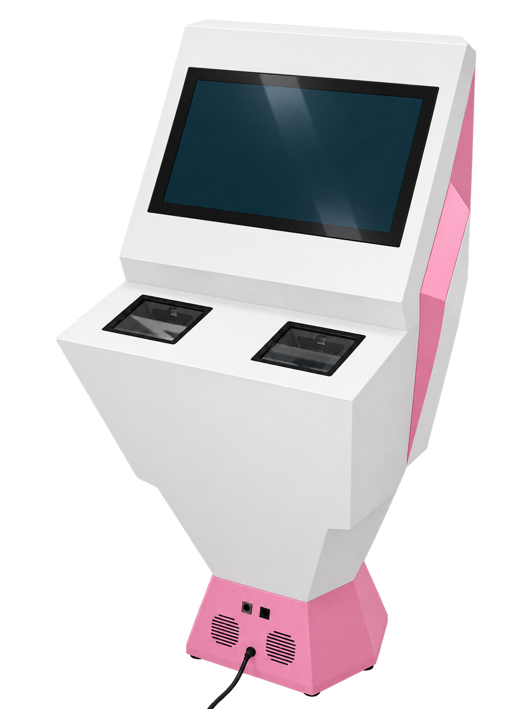

Thesis Project • Hardware & Systems
Automated Library Management System
My Computer Engineering thesis project integrating physical access control and self-service book handling. The system connects an automated Library Gate (LG), a user-facing Library Kiosk (LK) for borrowing and catalog lookup, and a Library Return Chute (LR) to streamline daily library operations.
View Project on GitHub